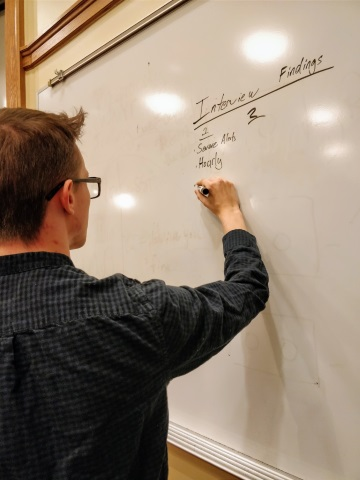
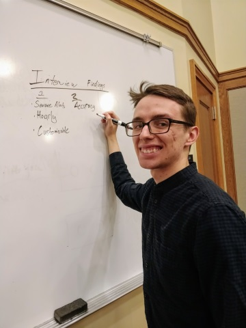

For this project, I worked with a team of students to perform many types of user testing on an application in order to make actionable suggestions that would improve the user experience. We decided to work with a weather application because we noticed there was a lot of different user-interface models being used in popular weather apps. From there, we decided on The Weather Channel app because they are unique in that they both gather weather information and sell it to other companies.
Our usability testing included a wide variety of tactics, from high level heuristics to statistically significant surveys. Some of the activities we performed include:
|
 |
| A snapshot of me at the start of interview analysis |
|
 |
| A snapshot of me at the start of interview analysis post-seeing the camera |
One Takeaway
I was fortunate enough to act as the test moderator for many of our formal user tests, which allowed me to gain a lot of experience running smooth and unbiased user tests. Learning to lessen my reactions to prevent influencing the participants, and practice encouraging the participants to expose their thoughts was a great experience for me to have. I believe that this experience will be the most useful lesson I learned in this project going forward.
An activity that I think went well was our preference test. In the preference test we combined the results of our survey, that users wanted 6-12 hours minimum in the daily view, with two common user interfaces in weather apps. The interesting work here was our test design and implementation, which was served via Qualtrics. We took great care in making our survey easy to use and inclusive, adding many paths, auto-fills, and thoughtful choices. Additionally, we used randomization to guard against bias in our results. This was necessary because our participants would be influenced by the variants they had already seen. You can take our preference test by clicking the button below.
One of the most interesting activities we performed as part of our user testing was conducting a survey. From our earlier investigations into our users, we identified the “daily view” feature as being an area of the user interface that could be improved. This feature shows weather information by the hour for the next 5 hours, and gives user the ability to swipe to see more hours. We hypothesized that users would want to see more hours by default on the daily to coincide with the typical amount of time our users were spending outside the house, 12 hours. This was because we found that most users were checking weather apps in the morning before leaving for work or school Our survey results showed that almost all our respondents did want more hours available on the daily view screen, but the range of 6 to 12 hours was larger than expected.
One of the first activities we performed as part of our user-testing was to complete and interaction map of the Weather Channel’s app. This allowed us to quickly understand the app as a whole, and look at the interaction flow to identify places that might be complex. One issue this brought to light was the long scrolling home page, which makes it difficult for users to find the features located further down the page. Later, we would confirm this with our remote, unmoderated user testing. You can view our interaction map by clicking the button below. Note: This is a large file and may take several seconds to open.